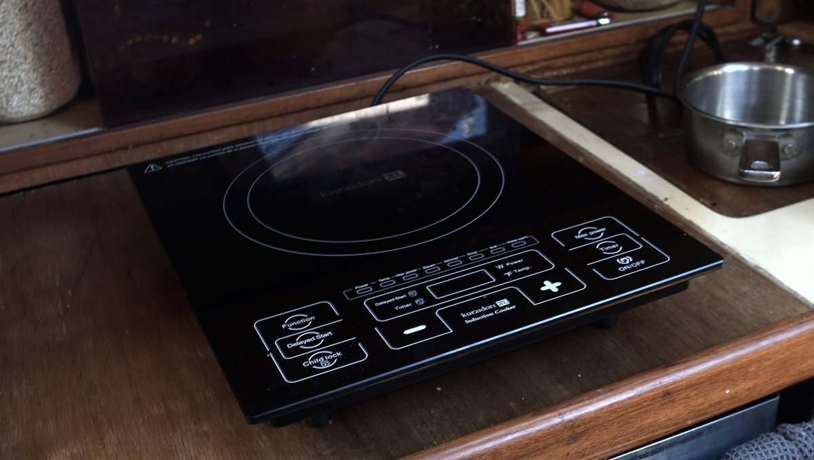

induction cooking
Induction cooktops are becoming more common on boats. It creates heat rapidly by magnetically inducing an electric current in steel, cast iron cookware and some stainless steel pots. It transfers 90% of its heat to a pot. They use heat efficiently and because they heat the pot material there is less heat loss. Nearly all of the energy is converted into cooking the food. A downside of IH is the high-power draw, which ranges between 1200-1800W for a single plate.
Small diameter pots may not register on the cooktop, if they don't try and put a bigger pot on first, then switch it for the other one. We have to do this for our moka pot, since the cooktop doesn't register anything under 5". Another trick is to put another small pot alongside the other one, but I prefer the 'switch' method.
We used a single IH cooktop while in Japan, since it was difficult to refill an lpg tank. We enjoyed the experience, but we were connected to shore power at the time and would never think to use it while at anchor. Using an IH cooker off the grid is possible, but requires a large battery bank, a larger inverter, and more solar and/or a generator. Smaller boats like ours do not have a large battery bank, or infinite surface for solar. In any case, IH cookers are more energy efficient than conventional electric cookers.
We sold the Japanese model because of the power difference, and bought another model in September 2021 to use while connected to shore power during winters in victoria. It works very well, this is our 4th winter cooking with it (2024.02.15)